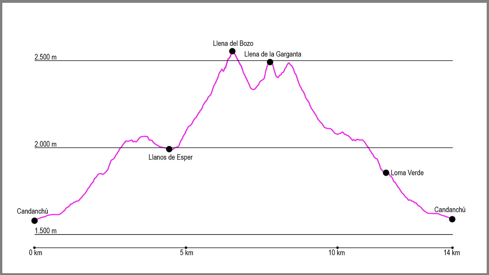

Desde el aparcamiento de Pista Grande en Candanchú, tomaremos la pista que sale en dirección oeste. Seguiremos en esta dirección hasta llegar al circuito de esquí de fondo y dejar a la derecha el estadio de biatlón. Al poco de pasarlo la pista empieza a subir y gira en dirección norte, momento en el cuál sale a nuestra izquierda un sendero marcado con un punto azul. Desde aquí empieza la subida por Loma Verde.
Primero seguiremos en dirección oeste para tras apenas unos 200 metros girar en dirección sur, donde empieza un camino bastante cómodo que nos hará ganar altura progresivamente. Pronto llegaremos a un pequeño barranco donde tendremos que tener cuidado al pasarlo, y poco después a la cueva de los Contrabandistas. Justo pasado este punto el camino gira 90 grados a la izquierda de forma brusca (importante no seguiré recto) para seguir ascendiendo hacia una zona de campas de hierba.
Después de una cómoda subida hasta este punto, empieza una zona de piedras donde tendremos que poner varias veces las manos en las rocas para ayudarnos a progresar y tras poco más de un kilómetro daremos vista al valle del Aspe. Llegados a este punto cruzaremos un pequeño barranco, casi siempre seco, para continuar en dirección suroeste ascendiendo por una pequeña traza de sendero. Justo cuando lleguemos a un pequeño collado y veamos los neveros del Aspe nos encontraremos con las marcas de la GR11, la cuales serán nuestra guía durante un 1 kilómetro aproximadamente.
Las marcas rojas y blancas descienden hacia los llanos de Esper, para después ascender por una zona de pliegues geológicos hacia el puerto de Aisa. Después de pasar una zona con dos sirgas y seguir ascendiendo en dirección norte, a nuestra izquierda saldrá como una pequeña canal en dirección suroeste, que tomaremos hasta su final donde se convierte en una arista con varias zonas aéreas. Seguiremos por ella y poco a poco iremos ascendiendo hasta la llena del Bozo.
Una vez hayamos hecho cima, el camino continúa por una canal de piedra en dirección sur al principio para al acabarse girar a la izquierda e ir manteniendo altura hacia el collado que tendremos al fondo: Brecha Wallon. Una vez lo pasemos, tomaremos una diagonal algo marcada que atraviesa una pedrera y que se dirige hacia la base de la Llena de Garganta. Justo cuando parece que el camino se va a acabar en un gran muro de roca, una canal a nuestra izquierda asciende hasta la cima en dirección este. Tras alguna pequeña trepada, llegaremos al pico, donde podremos disfrutar de unas maravillosas vistas del Pico Aspe y de los valles que nos rodean.
Para el descenso, nos dirigiremos hacia el sur siguiendo los hitos para girar rápidamente a nuestra izquierda y situarnos debajo del gran farallón de roca que continúa hasta el collado occidental. Aquí seguiremos por la base y justo antes de llegar al collado descenderemos un pequeño resalte rocoso.
Una vez ya en este punto, descenderemos por el valle del Aspe que sale a nuestros pies en dirección norte siguiendo la traza del camino existente y los hitos. Poco a poco perderemos altura hasta llegar al punto donde antes hemos empezado a bajar a los llanos de Esper. Justo en este mini collado seguiremos en dirección norte hacia Loma Verde obviando las marcas de GR que van a nuestra derecha.
Ya solo nos quedará deshacer nuestro camino por esta zona hasta que lleguemos de nuevo a las pistas de esquí de Candanchú y al punto de salida.
